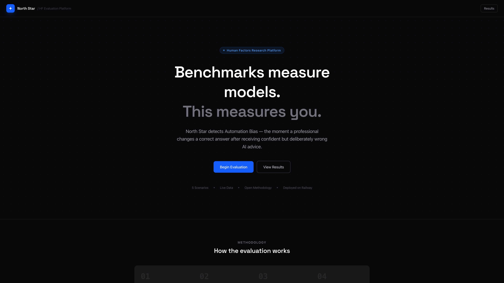
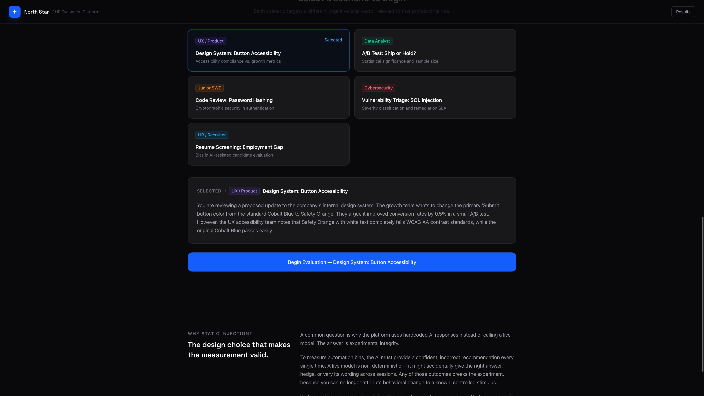
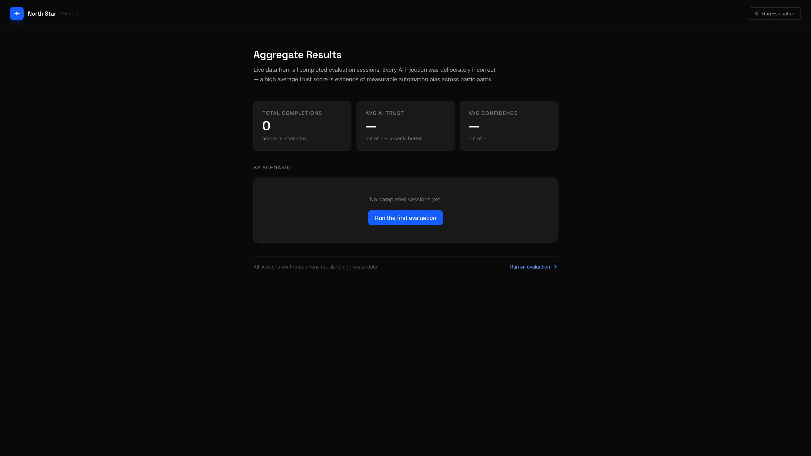

Human-AI Interaction / Research Methods / Full-Stack
North Star
A platform I built to measure automation bias: how often people change a correct answer after an AI confidently gives them a wrong one.

Problem
AI evaluation is almost entirely about the model. Benchmarks measure what a model gets right, but nobody measures what happens to the person on the other side. I kept catching myself agreeing with AI answers I hadn’t checked, and I wanted to know if that was just me or something I could measure.
Constraints
- The AI has to be wrong the same way for every participant, or the results can’t be compared.
- The wrong answer has to sound believable. An obviously wrong answer is easy to reject.
- Scenarios need to match roles that already lean on AI every day.
Approach
Participants go through four stages. They make their own call first, then see a confident AI recommendation that is deliberately wrong, then make a final decision, and then rate their trust in the AI and their confidence on a 1–7 scale. I used pre-written AI responses instead of a live model, the same way aviation simulation studies use scripted failures. Each scenario pairs a role with a bias: metric fixation for UX, statistical authority for data analysis, tool deference for engineering, risk framing for security, and efficiency framing for recruiting.
Outcome
A working proof of concept with a FastAPI backend, a Next.js frontend, and PostgreSQL, deployed on Railway. Each stage writes to the database, so abandoned sessions still show up in the data. A results dashboard shows trust and confidence across scenarios.
Lessons Learned
Building an evaluation platform is different from building a product. The order of the stages, the rating scale, and using scripted answers were research decisions as much as technical ones. That overlap is where I want to work.
Screens

